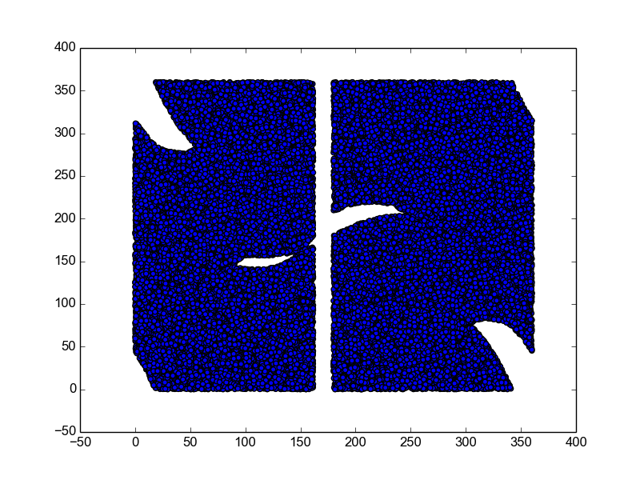

Robot Motion Planning
Outline
I have implemented Probablistic Roadmap algorithm. I have used Kivy for GUI. For finding shortest path, I have used NetworkX. This link was very helpful in implementing intersection check algorithm. C Space has been created using pyplot.
Code to be uploaded soon..
Robot Motion Planning : 2 Arms
# robot.dat
2 // Number of arms
200 200 // Arm lengths
2 // Number of obstacles
300 -100 // Obstacle 1
300 100
-80 0 // Obstacle 2
-120 40
# goals.dat
90 0
-60 -30
190 -120
170 120
C Space
Video
GIF
Images
Higher Resolution images are available here.
Robot Motion Planning : 5 Arms
# robot.dat
5 // Number of arms
100 100 100 100 80 // Arm lengths
3 // Number of obstacles
-450 300 // Obstacle 1
-100 300
100 300 // Obstacle 2
400 300
-200 100 // Obstacle 3
-250 150
# goals.dat
0 0 0 -90 0
90 0 0 -60 -30
180 0 -60 0 -120
180 -90 60 0 30
180 0 0 0 0
90 0 0 60 45
Video
GIF
Images
Higher Resolution images are available here.